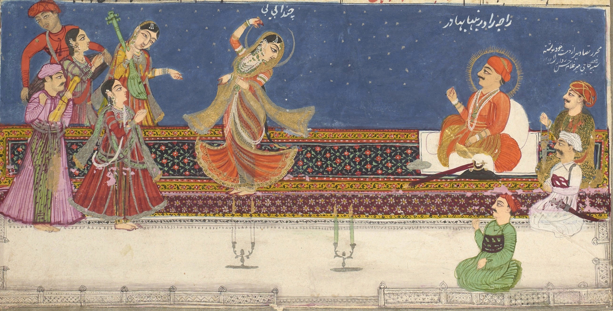

☰
Home
Context ▾
About Mah Laqa
Bibliography & Links
Visual Archive
The Text ▾
The Witnesses
Interactive Collation
Computational Analysis
About the Project
Downloads
Visual Archive
Documenting the Era of Mah Laqa Bai
All Items
Paintings
Architecture
Inscriptions

×
Title Here
Metadata Here
Attribution:
Source:
Description goes here.